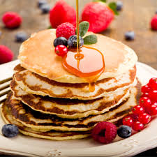

Thank you for visiting our webpage! Please visit again!

A pancake (or hotcake, griddlecake, or flapjack, not to be confused with oat bar flapjacks) is a flat cake, often thin and round, prepared from a starch-based batter that may contain eggs, milk and butter and cooked on a hot surface such as a griddle or frying pan, often frying with oil or butter. Archaeological evidence suggests that pancakes were probably the earliest and most widespread cereal food eaten in prehistoric societies.
Pancakes may be served at any time of the day or year with a variety of toppings or fillings, but they have developed associations with particular times and toppings in different regions. In North America, they are typically considered a breakfast food and serve a similar function to waffles. In Britain and the Commonwealth, they are associated with Shrove Tuesday, commonly known as "Pancake Day", when, historically, perishable ingredients had to be used up before the fasting period of Lent.
India has many styles of pancake. Variations range from their taste to the main ingredient used. All are made without the use of added raising agents. Pancakes prepared using a north Indian cooking style are known as cheela. Sweet cheela are made using sugar or jaggery with a wheat flour-based batter. North Indian salty pancakes are made using batter prepared from gram flour or green gram paste (moong daal) and are sometimes garnished with paneer, a cottage-style cheese.
Dosa, appam, neer dosa and uttapam are pancakes made in a south Indian cooking style. They are prepared by fermenting rice batter and split-skinned urad bean (black lentil) blended with water. Meetha pooda – sweet pancakes often eaten with pickles and chutney – are a common breakfast food item in the Punjab. Most of the pitha in Assam are types of pancakes served on occasions such as Bihu festivals. The Bengali semi-sweet pancake pati-shapta is stuffed with grated coconut or thickened milk.
In Western India, the multi-grain thalipeeth is popular. In Goa, a traditional crêpe-like pancake known as alebele or alle belle is eaten at tea-time. It is usually filled with jaggery and coconut. In Eastern India, malpuas are sometimes prepared in the form of pancakes. In some regions of Middle India, thin green Cheelas are made with ginger or garlic leaves' paste, and rice flour batter. Other ingredients included are salt, cummin seeds, green chili, oil, curry leaves and coriander leaves.
These fluffy chocolate pancakes are the perfect way for a chocolate lover to start their day! Thick and full of melty chocolate in each bite, this simple recipe gives you a good reason to get out of bed in the morning
I ordered the dutch pancakes with bananas and nutella, a perfect choice.
Outstanding, freshly prepared, made to perfection, this dish was delectably delicious.
It's a chain and we did not have high expectations but it was surprisingly good. Tasty food server fresh.